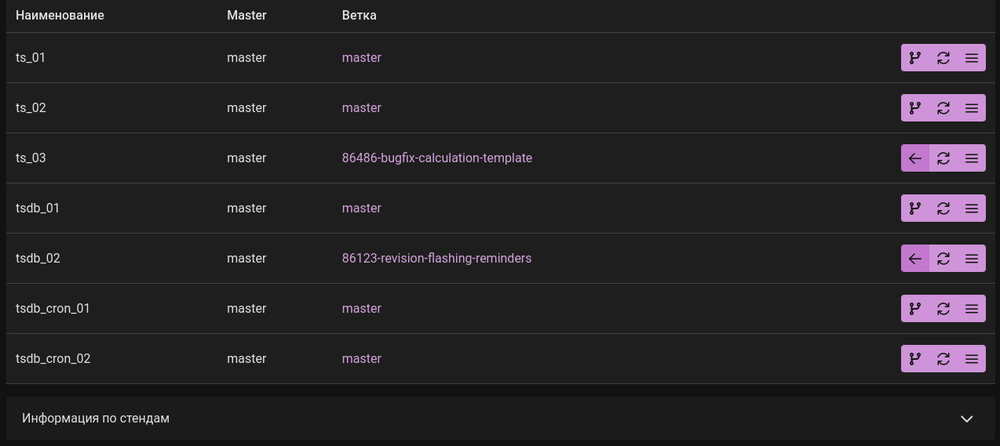
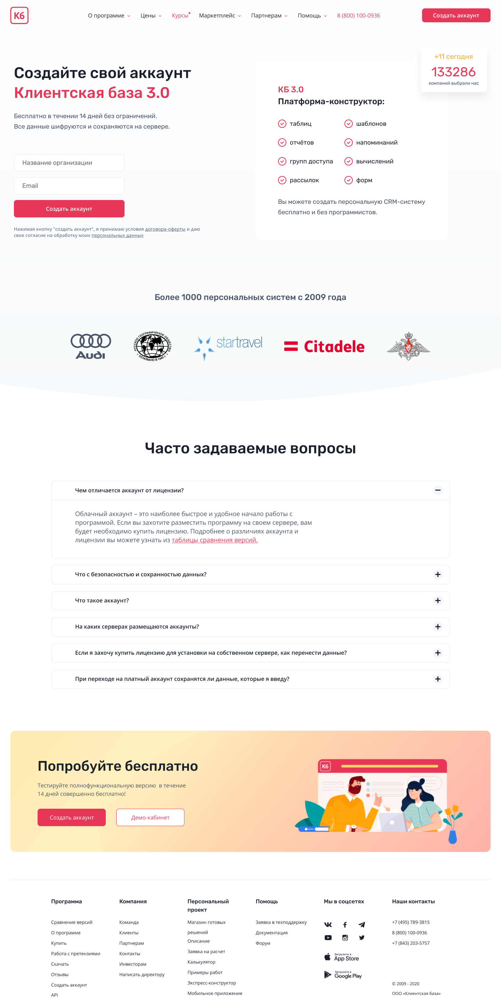
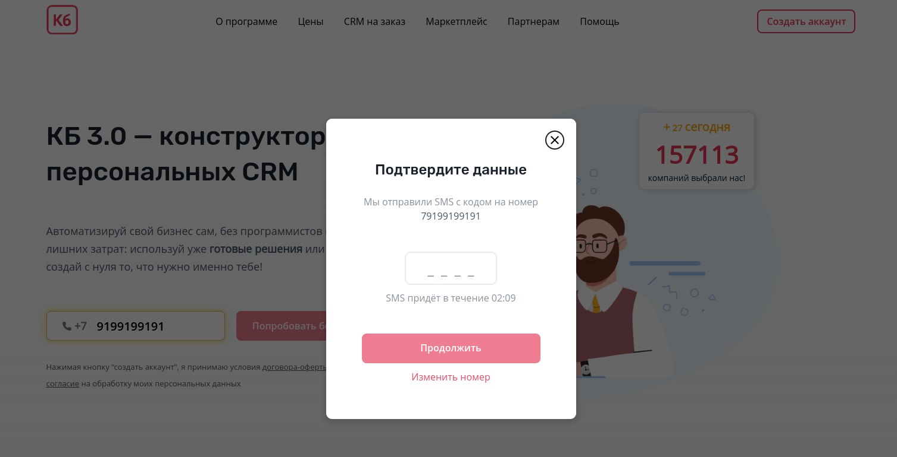
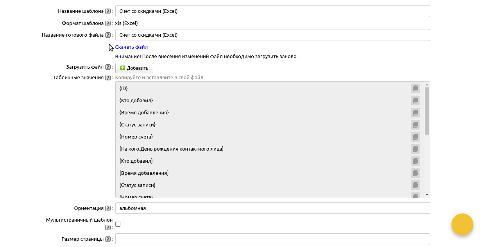

Контакты
Немного обо мне
Воспринимаю программирование как хобби. В свободное время, углубляюсь в изучение
продвинутых тем по JavaScript. Нравится поэкспериментировать над нахождением
собственных решений, по реализации конкретного компонента.
Больше всего приносит удовольствие, когда новые полученные знания, успешно
применяются на практике. Нацеленно создаю решения с фокусом на оптимизацию,
лаконичным и простым для понимая кодом. Могу часами обсуждать о разработке, в
особенности все что связано с фронтендом.
В настоящее время активно ищу компанию с вакансией фронтенд-разработчик.
Написанный код в нынешней компании не могу отдельно вынести для демонстрации.
Поэтому постараюсь свои умения продемонстрировать при реализации pet-проектов.
Навыки
- HTML / CSS / Sass
- JavaScript
- React / Redux
- Vue / Pinia
- Bootstrap / Primevue
- PhotoShop / Figma
Обучение
-
Learn JavaScript
Веб-учебник по JS -
Дока
Документация для фронтенд-разработчиков -
MDN Web Docs
Ресурс для разработчиков -
Хекслет
Фронтенд-разработчик -
HTML Academy
HTML и CSS. Профессиональная вёрстка сайтов -
HTML Academy
HTML и CSS. Адаптивная вёрстка и автоматизация -
HTML Academy
JavaScript. Профессиональная разработка веб-интерфейсов -
vuejs.org
Документация по фреймворку Vue -
Tocode.ru
Курс по Vue 3 -
Владилен Минин
JavaScript - Полное Руководство с Нуля
Сюда не включены ютуб каналы, всеразличные документации, форумы и прочие сервисы и сайты по теме разработки. Указал только основопалагающие источники, которыми пользовался часто, либо систематически из которых получал знания.
Языки
Русский
English
Татарча
Опыт работы
-
Июн 2013 - Сен 2013
Дизайнер-верстальщик
Муниципальный новостной проект г. Наб. Челны
За увлеченность в сфере программирования, взяли на летнюю подработку в it-park. Занимался верстанием элементов с подстройкой под дизайн сайта. Внедрял в самописный движок. Мой первый опыт работы в команде с методологией Канбан.
-
Дек 2020 - Авг 2021
Верстальщик с применением JS
Фриланс
Принял решение быть разработчиком. Свой путь начал с изучения Python, потом реализовал первый сайт на движке Django. Посчитал, что изученных знаний не хватает для профессиональной разработки. Выбрал область фронтенда и начал активно изучать современную верстку и JavaScript. Первый язык Python отлично подошел для понимания основ программирования на другом языке. Хотя странностей в JS оказалось чуть больше. Проходил курсы, практиковался на pet проектах, решал задачники. Параллельно подрабатывал на фрилансе.
-
Сен 2021 - Янв 2023
Фронтенд-разработчик
Клиентская база
Компания предоставляет CRM программу для b2b сегмента. Предоставляет смежные услуги и сервисы. Имеет собственный сайт.
В данной компании занимаюсь разработкой и внедрением нового функционала. Дорабатываю текущий функционал, устраняю баги и делаю рефакторинг кода. Ответственнен за любые изменения и манипуляции по сайту. Выполняю персональные фронтенд доработки для отдельных программ, по дополнительной услуги от клиентов.
Применяется Agile подход к управлению проектами. В проектах научился работать с методом поставленных задач, с элементами контроля, учетом времени и дедлайнами.
Мне кажется, получил огромный опыт по работе в команде и успел поработать фронтенд разработчиком во всех продуктах.
Портфолио
-
Тестовые стенды
Использовано: Vue + PrimeVue + marked/zero-md + SCSS
Быстрое тестирование CRM программы с накатыванием веток из GitLab'а.
Для демонстрации убрал взаимодействие с бэкендом по api и заменил на json. Но в коде сохранил в виде комментарий. -
Страница создания аккаунтов
С элементами на JS
По ТЗ требовалось реализовать страницу по дизайну из Figm'ы и внедрить на сайт компании.
Для слайдера выбрал легковесную библиотеку itc-slider. Счетчик "Кол-ва компаний" и список-аккордеон реализовал на чистом JS. Сделал адаптивно-резиновую верстку, под любые экраны устройств.
Как самую сложную часть, выделю интеграцию внешней формы, которая создавалась на стороне CRM программы. Установил Яндекс Метрику и связал с кодом формы. Добавил актуальную навигацию и подвал при внедрении страницы под движок mstl. -
Модальное окно с подтверждением телефона
JavaScript / jQuery
Планировалось реализовать модальное окно, которое будет появляться по кнопке. Затем внутрь окна добавить блок с введением номера телефона и подтверждением через СМС. Личным желанием было написать на чистом JS без использования библиотек, но под конец, сроки подтолкнули к jquery:)
Особенности:
1) Реализовано без дизайна
2) Разработано универсальное окно для сайта. До этого попапов не было.
3) В ходе реализации, переориентирован на другой конечный результат
4) Поменян input для ввода почты на телефон, с учетом нескольких input'ов на стр. через JS
5) Подготовлено под особенности сайта. Внедрено во все страницы. Доведено до рабочего состояния
 -
Макет шаблонов печати CRM
Необходимо было создать макет CRM программы с постраничным переходом. Реализовать и внедрить доработки. Функционал с шаблонами печати делал следующее: создавал файл, куда переносились данные из таблицы CRM в определенном виде.
Процесс реализации:
Сначала выцепил отдельные страницы программы, но столкнулся с рядом проблем. По памяти, пропала часть иконок в разных местах, появилась проблема в отображении ckeditor, происходили ошибки в js, не отрабатывал плагин на jquery.
Пробовал скачать страницы другими способами, но в каждом, если уходила одна проблема, то появлялась другая. Поэтому выбрал оптимальный вариант, затем устранил недочеты в местах, где планировалось добавить доработки. Показал список печати во всех форматах. После реализовал ряд доработок по внешнему виду. По памяти из ощутимых, поменял список в окне на скрол(перестроил данный участок, добавил иконки), добавил блок "Табличные значения" с кнопкой "Копировать", изменение блока "Загрузить файл" и т.д.
В ближайшее дни, в портфолио будет добавлено:
- Приложение документации на vuepress
- Страница-конструктор для партнеров
К сожалению, написанный код в CRM программе не могу вынести отдельно для
демонстрации, но планирую реализовать блок со списком, где расскажу, с
какими проблемами и задачами сталкивался, и как их решал.